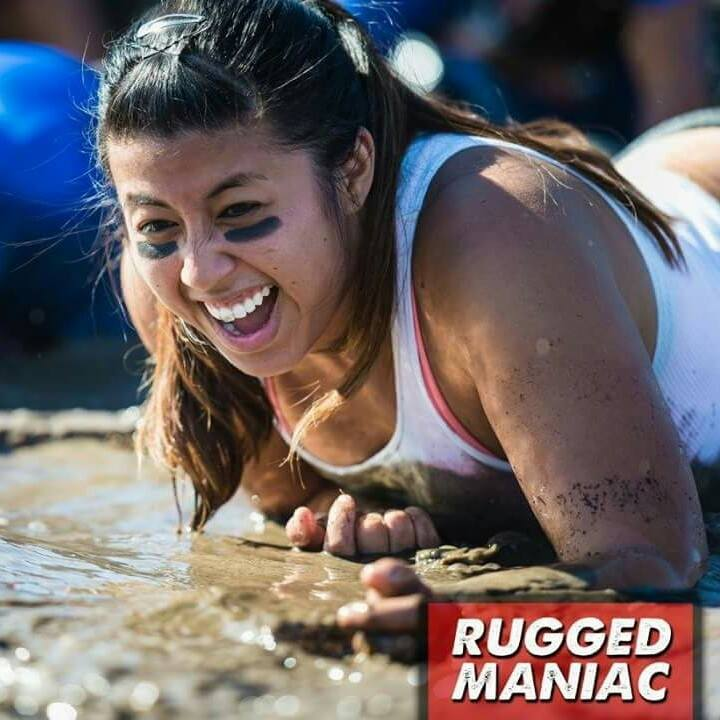

About Me
Hey there! I was born and raised in Orange County. My parents are from Vietnam and came over to the States during the Vietnam War. They met at Cal Poly Pomona, fell in love, and had me!
I am now married to a wonderful man named Raymond. We met while working together at a previous job and have been married for 2 1/2 years. One of the best things that came out of our relationship is that he renewed a fire in my faith in Jesus Christ and has shown me what a beautiful relationship with our Creator truly means. I am a follower of Jesus Christ and He has impacted my life for the better.
My husband and I do not have any kids yet but we do have 3 awesome furbabies: Champ our dog, Katniss our tabby cat, and Nala our calico cat. I do love animals :)
I am adventurous and also a roller coaster junkie! I love nature and the outdoors --- I do NOT however like the bugs though, yet they love me! I love trying new things, especially when it comes to food. I am definitely a foodie and I'm always interested in trying different types of food. I value sharing meals with people and I think breaking bread together is an underestimated art that strengthens bonds in relationships.
I also love and can appreciate all types of music. I like to sing and can play a little bit of piano and guitar. I love to travel and explore. A few places I've been to are Vietnam, Japan, South Korea, and Israel. Thanks for reading!
Also, I am such a noobie at coding. Please bear with me! Thank you!
Connect with Me